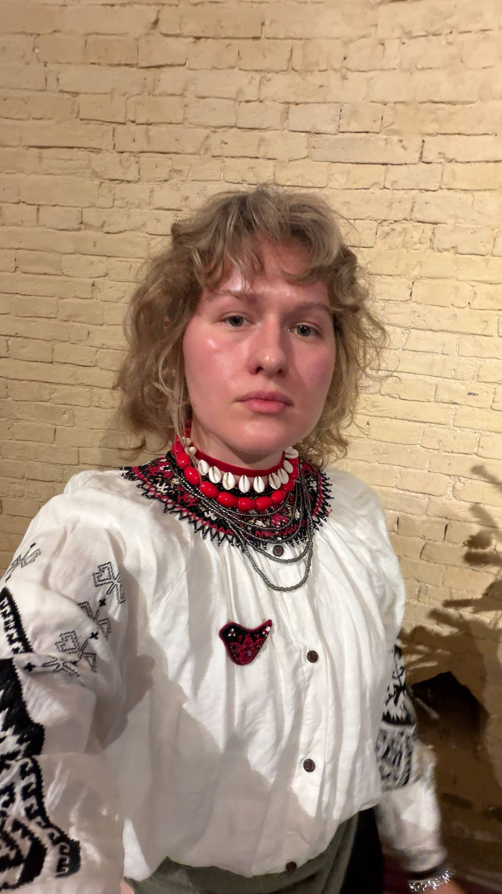

Резюме
Харсун Анастасія Олександрівна

Future JS Developer
QA Engineer | 5+ років досвіду
Manual / Functional testing | Bug reporting |
Київ.
Досвід роботи:
2021 - до сьогодні, QA Software Engineer, Dataart
2019 - 2021, Support Manager, Dataart
Освіта:
2017-2019, Магістр, Менеджер з управління бізнес процесами
2013-2017, Бакалавр, Перекладач англійської та іспанської мов
Навички
Manual testing (web & moblie)
Functional, Regression, Smoke, Sanity testing
Test case design & test documentation
Bug reporting & defect lifecycle management
Requirements analysis
SDLC / STLC understanding
Exploratory testing
Cross-browser & cross-platform testing
Інструменти
Jira / Confluence, Azure DevOps
TestRail
Postman (API testing)
JMeter
Swagger
Linkedin link
whatalaugh11@gmail.com
+38 (093) 035 8718
EN Version